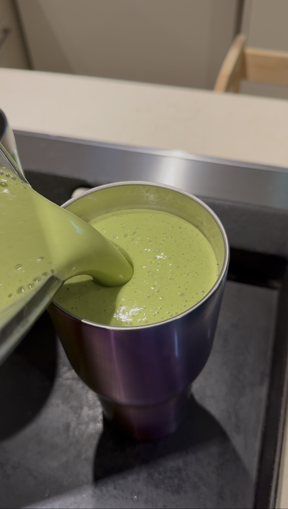
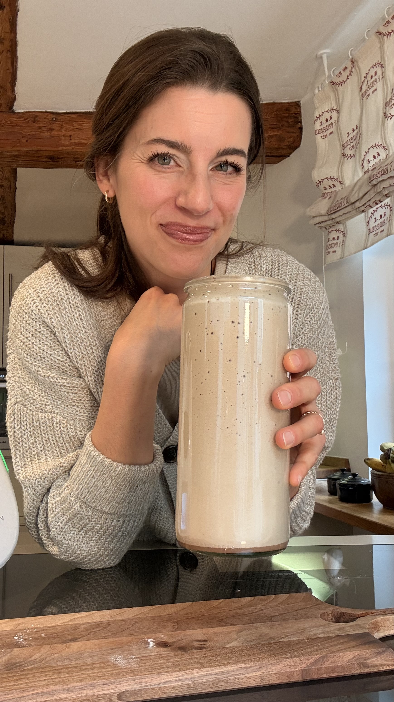
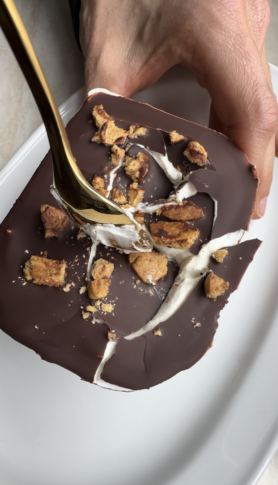

Meine Küche
Essen, das nährt —
ohne Regeln.
Ich koche intuitiv. Keine genauen Mengen, kein strenges Rezept, keine Verbotsliste. Einfach: was der Körper will, was schmeckt, was nährt.

Ich koche intuitiv. Keine genauen Mengen, kein strenges Rezept, keine Verbotsliste. Einfach: was der Körper will, was schmeckt, was nährt.

Ich habe nie nach strikten Rezepten gekocht — und tue es heute noch nicht. Was ich auf diese Seite schreibe, sind eher Inspirationen, Ideen, Richtlinien. Kein Gramm, keine Kalorien, keine Bewertung.
Denn genau das ist mir wichtig: Essen darf sich gut anfühlen. Es darf bunt, fröhlich, warm und nährend sein — ohne dass du dabei nachdenken musst, ob es „erlaubt" ist.
Meine Küche ist grün und frisch. Ein grüner Smoothie morgens, ein herzhaftes Frühstück wenn mir danach ist, ein buntes Mittagessen aus dem, was gerade da ist. So koche ich — und so lernst du es hier kennen.

SmoothiePflanzliches Protein, Banane, Mandelmilch, etwas Zimt. Sättigend, nährend, gut für Körper und Nerven.

SmoothieMein persönlicher Morgen-Shake: grün, cremig, kraftvoll. Spinat, Banane, Apfel, Ingwer und etwas Mandelmilch.
 Frühstück
Frühstück
Was gerade da ist: Ei, Gemüse, Kräuter, vielleicht etwas Avocado oder Käse. Kein festes Rezept — nur das, wonach der Körper fragt.
 Mittagessen
Mittagessen
Bunte Tomaten, frisches Basilikum, Olivenöl, gutes Salz. Schlicht, ehrlich, sommerlich — mehr braucht es nicht.
 Mittagessen
Mittagessen
Knuspriger Boden, Gemüse nach Saison, Eier-Guss, frische Kräuter. Wärmt und sättigt — auch am nächsten Tag noch gut.
 Mittagessen
Mittagessen
Gelbe, orange und lila Karotten, geröstete Kichererbsen, Tahini-Dressing. Bunt macht glücklich — wirklich.
 Snack
Snack
Gedämpfter Brokkoli, Frischkäse, etwas Knoblauch, Zitronensaft. Cremig, würzig — und auch mit Crackern oder Rohkost ein Traum.

DessertQuark, Eier, etwas Honig, Vanille — ohne viel Zucker, ohne schlechtes Gewissen. Süß sein darf sein.
„Essen soll sich gut anfühlen.
Nicht verdient werden."
Mehr aus meiner Küche findest du täglich auf Instagram. Ungestellt, direkt aus dem Alltag mit drei Jungs — ehrlich und ohne Perfektion.
Trag dich ein und erhalte neue Rezepte, Gedanken zu Essen und Körper sowie Infos zum Kurs — direkt in dein Postfach.
Ab sofort bekommst du neue Rezepte und Impulse direkt von mir.